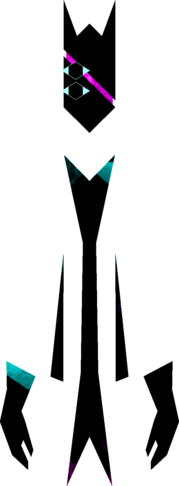
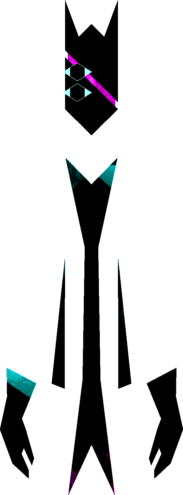

Who am I?
uhh names: anchovii/anchoviii/anchov3i. its, uh, anchovy but 'ii' instead of 'y'.
other names
Necros: due to a combo of mojang services and The email just stopped existing. I was stuck with my brothers minecraft username. It used to make me cringe a little bit but I've been using it for actual years now, and when the minecraft migration finally forced me to get a new minecraft accout I kept the 'Necros' part.
[REAL NAME]: Self explanatory.
Luce: So one of my characters in this minecraft server was named 'Luce Tawfin'. I put the first name in my username buuuut I didn't participate in lore so then ppl just started assuming I was called Luce, and so now I'm Luce.

 
